Last edited:
Hello,
In this blog post, we will explain how we generated the clouds using noise algorithms and rendered them in an OpenGL application, as well as the problems we encountered and their solutions.
First, we created our base classes to use OpenGL easily. We created shader, object, skybox, and noise headers. After that, we created a simple skybox scene that renders an HDR image to the screen. We searched online to find an appropriate HDR scene to better showcase our clouds.
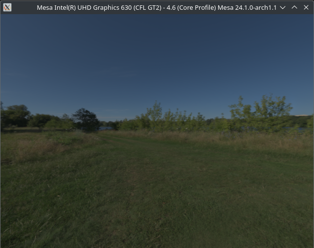Next, we started to implement our noise algorithms. We experimented with Perlin Noise and Worley Noise algorithms to generate the clouds. Initially, we calculated the noise on the CPU and sent it to the GPU, but eventually, we decided to perform the calculations on the GPU using GLSL. Ultimately, we chose Perlin Noise to generate our clouds.
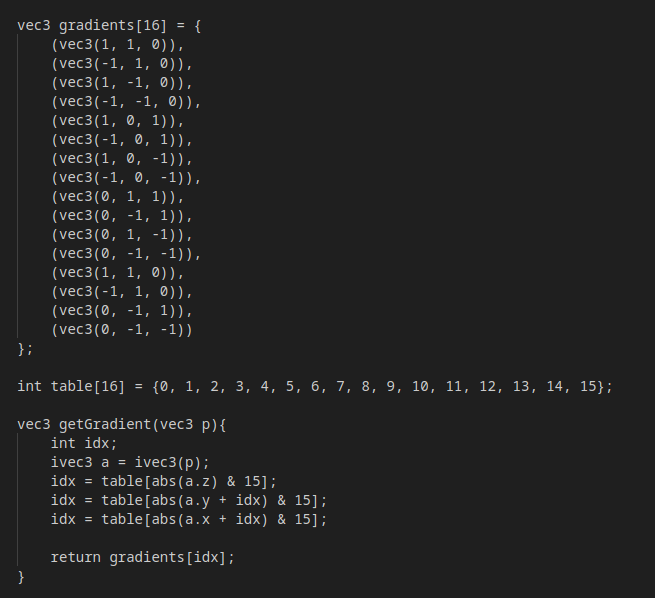We used a simple Perlin Noise algorithm as shown in the CENG469: Computer Graphics II class slides.
While working on this, we realized that the skybox did not create a good view for our users. So, we tried to create our own ground and environment. During this part, we encountered various problems and added grass rendering from HW3, but the view was unsatisfactory, so we decided to cancel it.
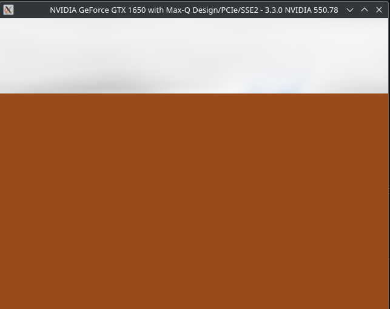 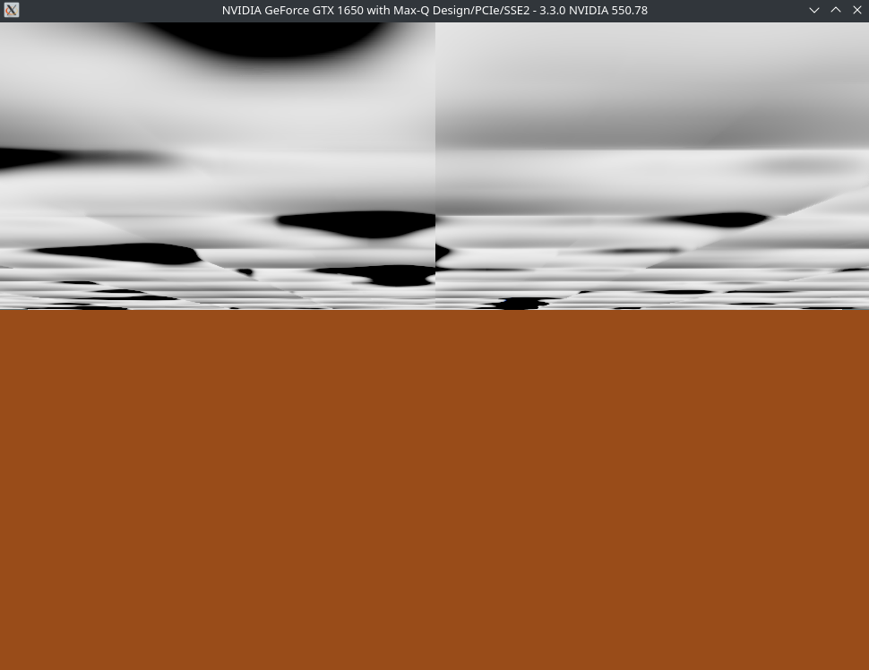 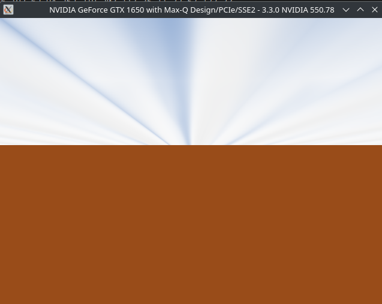 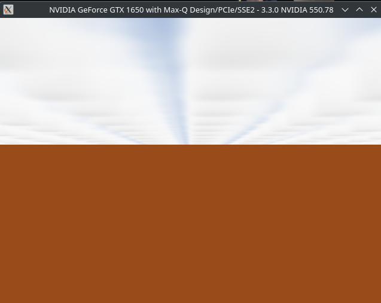While implementing the ground, we tried to improve the clouds using noise. During this process, we created many different, unsatisfactory volumetric clouds. We refined our cloud and noise algorithms to optimize them. Afterward, we finalized our noise algorithm and adjusted our cloud algorithm to achieve better results.
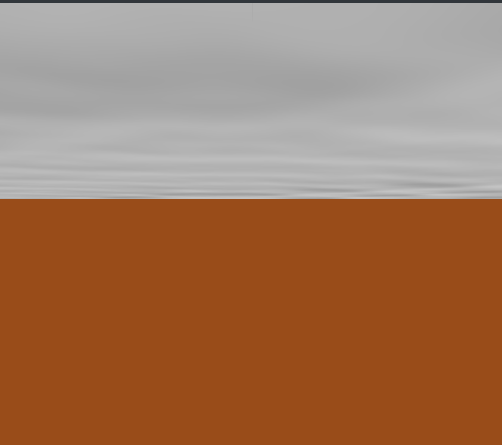 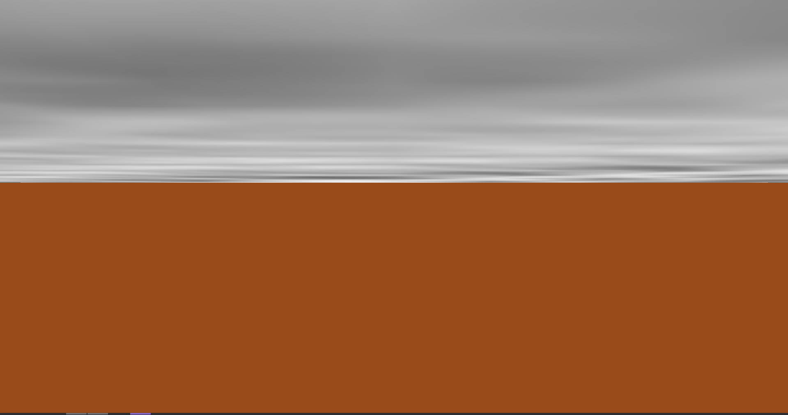 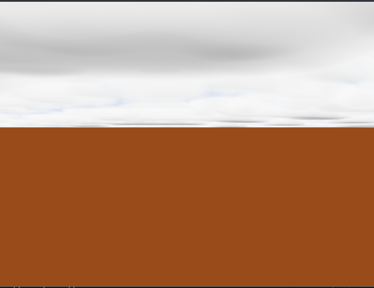After these attempts, we began to achieve good results. Additionally, we removed the ground and reverted to the skybox scene.
For the clouds, we added speed, a night-day shift, and options to increase and decrease the gaps between clouds.
PS: We wanted to use Vulkan for this project, but we couldn't make it work in our PCs, so we migrated to OpenGL.
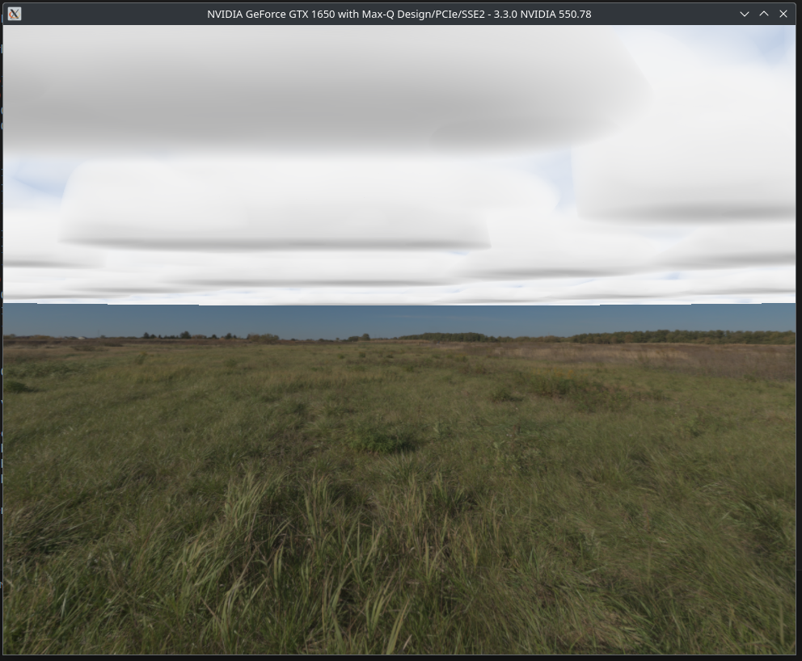 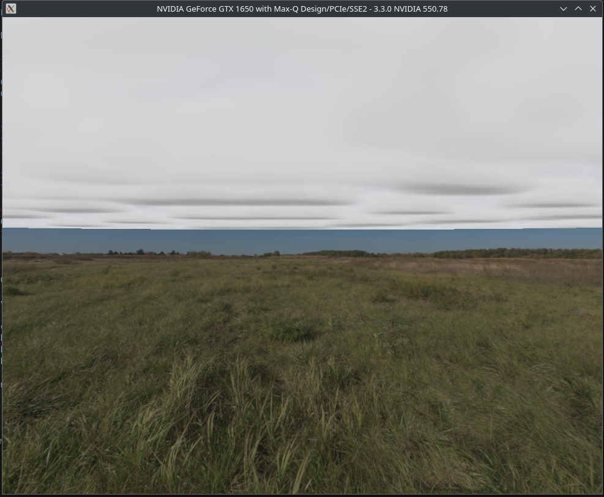 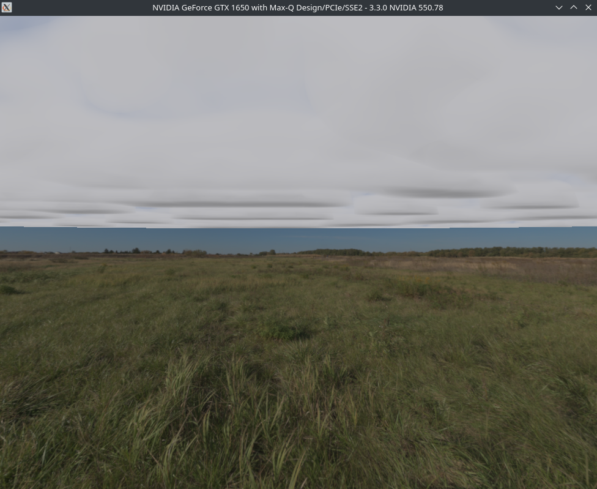 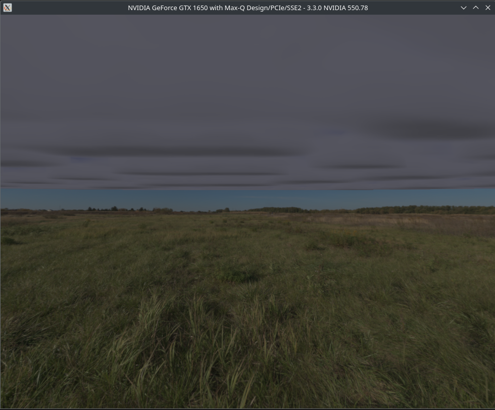 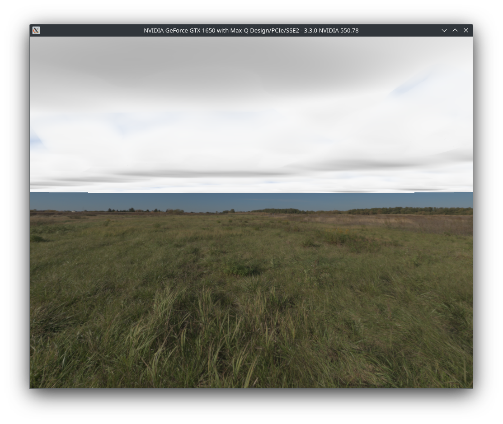